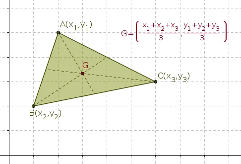
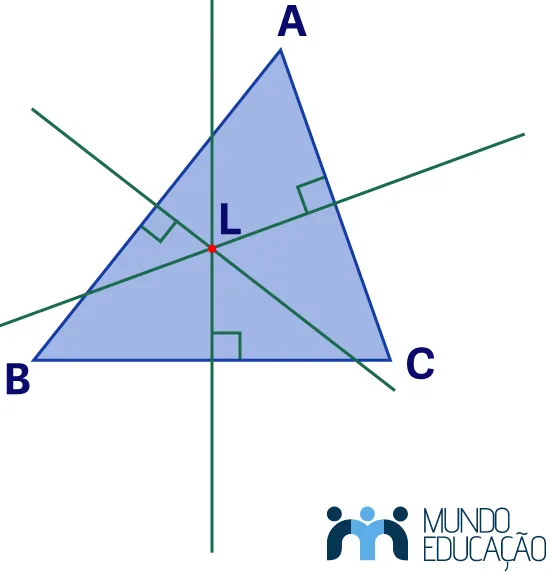
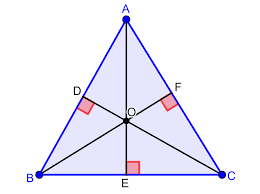
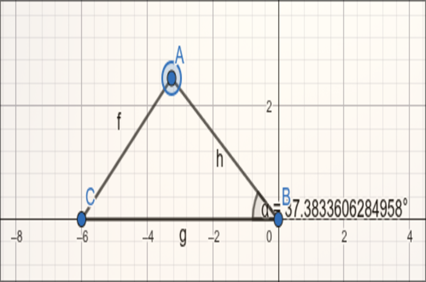
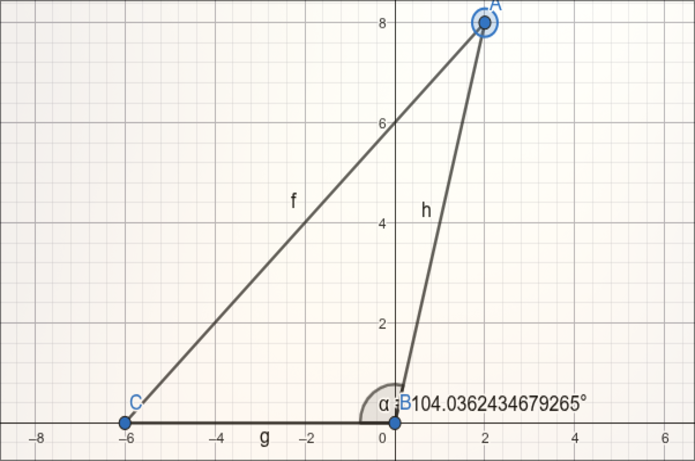
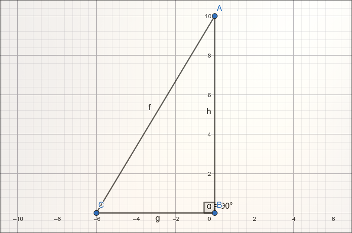
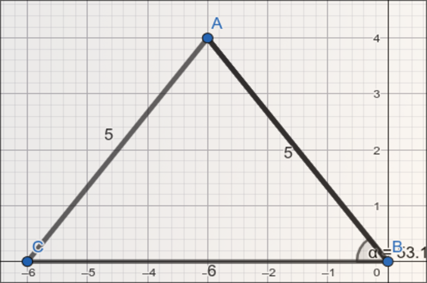
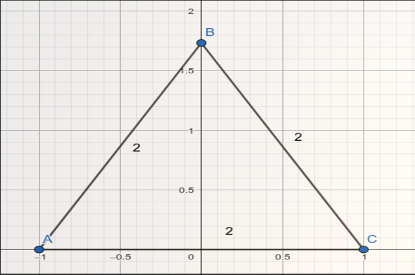
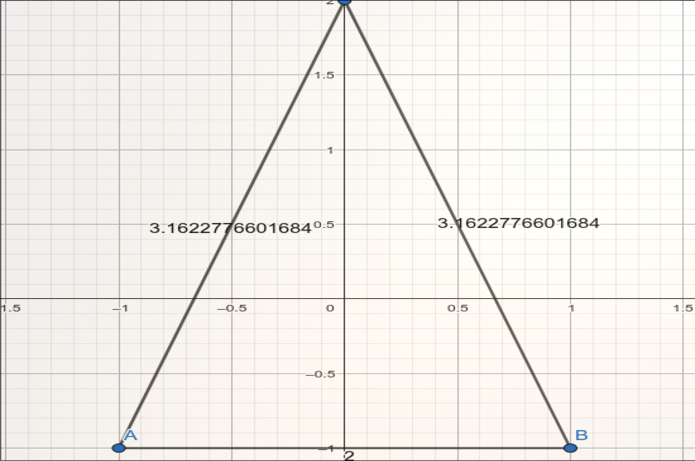

Área do Triângulo por Coordenadas
Dado um triângulo com vértices A(x₁, y₁), B(x₂, y₂) e C(x₃, y₃) no plano cartesiano, é possível calcular sua área sem medir lados ou ângulos — apenas com as coordenadas dos vértices.
Como calcular
A fórmula utiliza o conceito de determinante de uma matriz 3×3:
A área é dada pelo módulo de:
½ · |x₁(y₂ - y₃) + x₂(y₃ - y₁) + x₃(y₁ - y₂)|
O valor absoluto garante que a área seja sempre positiva, independente da ordem em que os vértices são listados.
Exemplo prático
Considere o triângulo com vértices A(0, 0), B(4, 0) e C(0, 3):
½ · |0(0 - 3) + 4(3 - 0) + 0(0 - 0)| = ½ · |12| = 6 unidades²
Pontos Notáveis do Triângulo
Os pontos notáveis são pontos especiais obtidos a partir das retas notáveis de um triângulo. Com geometria analítica, é possível calcular suas coordenadas exatas a partir dos vértices.
Baricentro
O baricentro é o ponto de encontro das medianas do triângulo — segmentos que ligam cada vértice ao ponto médio do lado oposto. Ele representa o centro de massa do triângulo.
Dado um triângulo com vértices A(x₁, y₁), B(x₂, y₂) e C(x₃, y₃), o baricentro G é calculado por:
G = ((x₁ + x₂ + x₃) / 3, (y₁ + y₂ + y₃) / 3)
Exemplo: Para A(0, 0), B(6, 0) e C(0, 6), o baricentro é G(2, 2).

Circuncentro
O circuncentro é o ponto de encontro das mediatrizes do triângulo — retas perpendiculares a cada lado passando pelo seu ponto médio. É o centro da circunferência circunscrita ao triângulo.
Para encontrá-lo analiticamente, resolve-se um sistema de equações formado pelas mediatrizes de dois lados quaisquer do triângulo. O circuncentro pode estar dentro, fora ou sobre o triângulo, dependendo do tipo.

Ortocentro
O ortocentro é o ponto de encontro das alturas do triângulo — segmentos perpendiculares a cada lado traçados a partir do vértice oposto.
Analogamente ao circuncentro, encontra-se o ortocentro resolvendo o sistema formado pelas equações de duas alturas. Em triângulos acutângulos está dentro, em obtusângulos está fora e em retângulos coincide com o vértice do ângulo reto.

Classificação do Triângulo por Coordenadas
Com as coordenadas dos vértices, é possível classificar qualquer triângulo usando apenas a fórmula da distância entre dois pontos:
d = √((x₂ - x₁)² + (y₂ - y₁)²)
Quanto aos lados
Calculando os três lados do triângulo:
- Se os três lados são iguais → Equilátero
- Se dois lados são iguais → Isósceles
- Se todos os lados são diferentes → Escaleno
Quanto aos ângulos
Após obter os comprimentos dos lados a, b e c, aplica-se o teorema de Pitágoras para classificar:
- Se a² + b² = c² → Retângulo
- Se a² + b² > c² → Acutângulo
- Se a² + b² < c² → Obtusângulo
Exemplo: Para A(0, 0), B(3, 0) e C(0, 4), os lados medem 3, 4 e 5. Como 3² + 4² = 5², o triângulo é retângulo e escaleno.
Galeria de Imagens geradas no Geogebra





